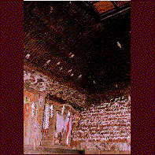

真山の万体仏堂/秋田県男鹿市 
なまはげで有名な男鹿半島の真山神社。その近くにひっそりと建つ小さなお堂の話を。
じつはこのお堂、JRの秋田新幹線のポスターにも起用されていたので知っている人は知ってると思うが、
本尊を奉ってある祭壇と入り口以外の壁面がびっしりと仏様で埋っているのだ。その数、約1万。
ひとつひとつの仏様の大きさは約10�B程度。杉材で出来ている。造作はいたって素朴な造りながらも壁じゅうに張り付いたその様はちょっと異様。しかも壁だけには納まり切れず屋根裏の方まで仏様が侵食している。
そしてなぜか人の手の届く範囲の仏様にはティッシュでつくった襟巻の様なものが首に巻いてある。勿論四面全部。
しかし、まあ万体仏といってもお堂の規模自体が小さいし、仏様もちゃっちいし、色彩もないしで、インパクトとしてはそう無いんだけど、壁に納まり切れずに屋根裏にまで仏様張り付けたそのガッツは買いたい。
1997.8.
珍寺大道場 HOME